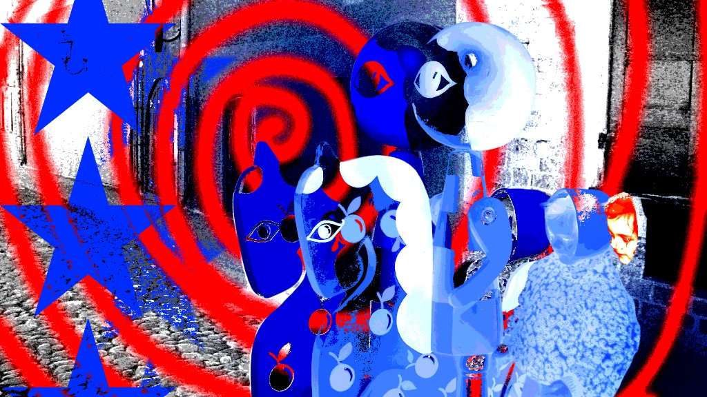

Designer visiva
Esploratrice di spazi liminali.
Il mio processo creativo parte sempre da una tensione: il rapporto tra chi guarda e chi è guardato, tra la superficie e ciò che nasconde. Attraverso la sovrapposizione di texture e una gestione elettrica del colore, costruisco narrazioni che sfidano la percezione. I miei lavori sono frammenti di un'allucinazione digitale, pensati per chi non ha paura di guardare oltre la nitidezza. Credo che il design debba essere una vibrazione, un modo per dare corpo a quegli stati d'animo che le parole non riescono a definire.
Progetti selezionati
Vedi tutti →
I primi due sono lavori miei — nati da immagini che non riuscivo a smettere di guardare. Il terzo è un progetto universitario in cui i miei colleghi mi hanno chiesto di fare la protagonista, una cosa che non mi era mai capitata. Ho accettato, e mi sono ritrovata a fare riprese scomode, a spingermi oltre quello che credevo fosse il mio limite. Sono i tre lavori in cui ho capito di più su come lavoro.
Hai un progetto in mente?